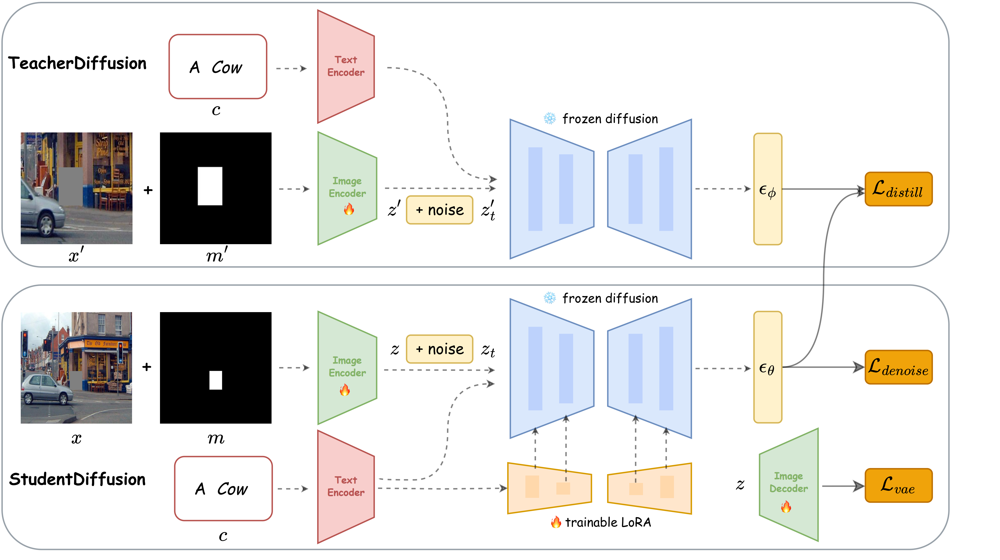

SOEDiff: Efficient Distillation for Small Object Editing
Anonymous Authors
Anonymous Institutions
SOEDiff is the first image inpainting model that identity and address small object editing problem with mask region much smaller than normal size that former inpainting model used and achieve outperform result on small data filtered from MSCOCO and OpenImage.
Abstract
In this paper, we delve into a new task known as small object editing (SOE), which focuses on text-based image inpainting within a constrained, small-sized area. Despite the remarkable success
have been achieved by current image inpainting approaches, their application to the SOE task generally results in failure cases such
as Object Missing, Text-Image Mismatch, and Distortion. These failures stem from the limited use of small-sized objects in training
datasets and the downsampling operations employed by U-Net models, which hinders accurate generation. To overcome these
challenges, we introduce a novel training-based approach, SOEDiff, aimed at enhancing the capability of baseline models like StableDiffusion in editing small-sized objects while minimizing training costs.
Specifically, our method involves two key components: SO-LoRA, which efficiently fine-tunes low-rank matrices, and Cross-Scale Score Distillation loss, which leverages high-resolution predictions from the pre-trained teacher diffusion model. Our method
presents significant improvements on the test dataset collected from MSCOCO and OpenImage, validating the effectiveness of our proposed method in small object editing. In particular, when comparing SOEDiff with SD-I model on the OpenImage-f dataset, we observe a 0.99 improvement in CLIP-Score and a reduction of 2.87
in FID.

Method
SOEDiff is fune-tuned with small-scaled text-image datasets with two main components:First, drawing inspiration from LoRA that known for its efficiency in fine-tuning diffusion models, we propose the SO-LoRA, which aims to optimize low-rank matrices for small object editing, enhancing the alignment between textual descriptions and generated small objects. Second, we propose the Cross-Scale Score Distillation loss to further enhance the image quality. Additionally, to further enhance the image fidelity, we can optionally fine-tune the VAE by performing pixel-level reconstruction.
